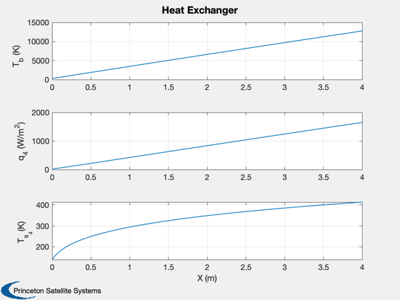

Complete thermal analysis from fusion to magnets
------------------------------------------------------------------------ See also: RadiationShield, HeatTransferChannel, HeatExchangerWithLosses, OptimalMLIDensity ------------------------------------------------------------------------
Contents
%-------------------------------------------------------------------------- % Copyright 2019 Princeton Satellite Systems, Inc. All rights reserved. %--------------------------------------------------------------------------
Inputs
Waste heat, for a 1.1 MW fusion reactor
Q = 0.61e6; % W l = 1.0; % length of radiating plasma, m r = 0.3; % radius of inner wall, m qSun = 1367; % W/m2 nChannels = 20; % how many ducts tIn = 300; % inlet (cold) temperature tOut = 1589; % out temperature, GE ceramic blades pR = 2; % inlet pressure, ATM cP = 424; % He/Xe
Solar radiation and outer heat shield
dShield = RadiationShield; dShield.n = 200; % layers of MLI % Flux emitted from fusion heat exchanger dShield.qS = qSun; % Surface flux (W/m^2) dShield.epsI = 0.6; % Emittance of inner MLI wall [tS, tI, qI, k, outSh] = RadiationShield(dShield); disp('----') disp('Heat Thru Sun Shield') disp('----') fprintf(1,'Outer shield temperature %12.2f deg-K\n',tS); fprintf(1,'Inner shield temperature %12.2f deg-K\n',tI); fprintf(1,'Inner shield flux %12.4f W/m^2\n',qI); fprintf(1,'MLI thickness %12.2f cm\n',dShield.n/outSh.nD);
---- Heat Thru Sun Shield ---- Outer shield temperature 299.40 deg-K Inner shield temperature 38.03 deg-K Inner shield flux 0.0711 W/m^2 MLI thickness 10.96 cm
Fusion heat exchanger
Assume a 70/30 He/Xe molar mixture
% Calculate heat per channel c = 2*pi*r; % circumference w = c/nChannels; % channel width h = 0.5*w; % channel height q = Q/l/nChannels; % wall loading, W/m, per channel d = struct( 'name', 'Helium/Xenon 70/30',... 'length', l,... % m 'w', w,... % m 'h', h,... % m 'q', q,... % MW 'cP', cP,... % J/kg-K 'gamma', 1.659,... % 'kC', 0,... % 'kE', 0,... % 'tInlet', tIn,... % K 'tOutlet', tOut,... % K 'tube', 'square',... 'pressure', pR ); % ATM d.gas = {'xe', 0.3, 'he', 0.7}; channel = HeatTransferChannel( d ); % Compute the thermal conductivity of the complete exchanger with the channel, % duct wall, and an MLI blanket d = HeatExchangerWithLosses; % Don't need to do this chamber stuff, it's already determined in the function % above. Should be able to use the d.tB0 = tIn; % cold end d.qDot = q; % W/m, this is for one channel d.cP = cP; % approximate conductivity of a 4 mm ceramic wall kW = 20.7; % W/m K % SJT: source? % thermal conductance kW = kW/0.004; % W/m^2 K % % heat exchanger channel % gamma = d.cP/300; % SJT: what is 300? % u = channel.u; % m/s % p = pR*14.7*6895; % ATM to N/m2 % % Note: mu and kF are actually functions of temperature... % mu = 5.95e-5; % (??) viscosity, kg/m-s % kF = 0.0262; % conductivity (W/m-K) ?? % R = RFromCPAndGamma(d.cP,gamma); % rho = p/(R*d.tB0); % nu = KinematicViscosity( mu, rho ); % pR = PrandtlNumber( mu, d.cP, kF ); % % whoopsies: the reactor diameter or the channel diameter? % rE = ReynoldsNumberKinematic( u, channel.d, nu ); % nU = NusseltTurbulent( rE, pR ); % h = HeatTransferCoeff( nU, kF, channel.d ); % W/m^2 K % MLI - compute layers/cm and total conductance. dMLI = OptimalMLIDensity; dMLI.n = 200; % number of layers [nD,~,kMLI] = OptimalMLIDensity(tOut,d.tB0,dMLI); % sum the thermal conductances % SJT: conductance or conductivity??? % channel - mean h or beginning/end h d.k = 1/(1/kW + 1/channel.out.h(end) + 1/kMLI); % channel mass flow rate d.mDot = channel.mDot; % kg/s % calculate the temperatures and fluxes % NOTE: header says input k is thermal conductivity [tB,tS4,q4] = HeatExchangerWithLosses( d, true ); % Display output disp('----') disp('Fusion Heat Exchanger Design') disp('----') fprintf('Input heat flux: %g W/m\n',d.qDot) fprintf('Channel flow rate: %g kg/s\n\n',d.mDot) fprintf('Thickness of MLI blanket = %.2f cm\n',dMLI.n/nD); fprintf('Thermal conductance wall: %g W/m2 deg-K\n',kW) fprintf('Thermal conductance MLI: %g W/m2 deg-K\n',kMLI) fprintf('Thermal conductance flow: %g W/m2 deg-K\n',h) fprintf('Total conductance: %g W/m2 deg-K\n',d.k) fprintf('Max radiative flux: %g W/m2\n',max(q4)) fprintf('Start/end wall temps: %g, %g K\n',tS4(1),tS4(end)) fprintf('Start/end gas temps: %g, %g K\n',tB(1),tB(end))
---- Fusion Heat Exchanger Design ---- Input heat flux: 30500 W/m Channel flow rate: 0.055806 kg/s Thickness of MLI blanket = 2.27 cm Thermal conductance wall: 5175 W/m2 deg-K Thermal conductance MLI: 0.133934 W/m2 deg-K Thermal conductance flow: 0.0471239 W/m2 deg-K Total conductance: 0.133618 W/m2 deg-K Max radiative flux: 1652.02 W/m2 Start/end wall temps: 139.464, 413.15 K Start/end gas temps: 300, 12776.9 K
Total heat to magnet
d = RadiationShield; d.n = 200; % layers of MLI protecting coils % Flux emitted from fusion heat exchanger d.qS = 170; % Surface flux (W/m^2) d.epsI = 0.2; % Emittance of inner MLI wall StructToText(d) [tS, tI, qI, k, out] = RadiationShield(d); disp('----') disp('Heat To Magnets') disp('----') fprintf(1,'Outer wall temperature %12.2f deg-K\n',tS); fprintf(1,'Inner wall temperature %12.2f deg-K\n',tI); fprintf(1,'Inner wall flux %12.2e W/m^2\n',qI); fprintf(1,'MLI conductance %12.2e W/m^2-K\n',k); fprintf(1,'MLI thickness %12.2f cm\n',d.n/out.nD); %--------------------------------------
n: 200 cS: 2.98e-08 cR: 5.86e-10 gamma: 2.84 epsTR: 0.043 alphaS: 0.3 epsS: 0.9 epsI: 0.2 qS: 170 tol: 1 ---- Heat To Magnets ---- Outer wall temperature 177.80 deg-K Inner wall temperature 27.24 deg-K Inner wall flux 6.24e-03 W/m^2 MLI conductance 4.14e-05 W/m^2-K MLI thickness 17.84 cm